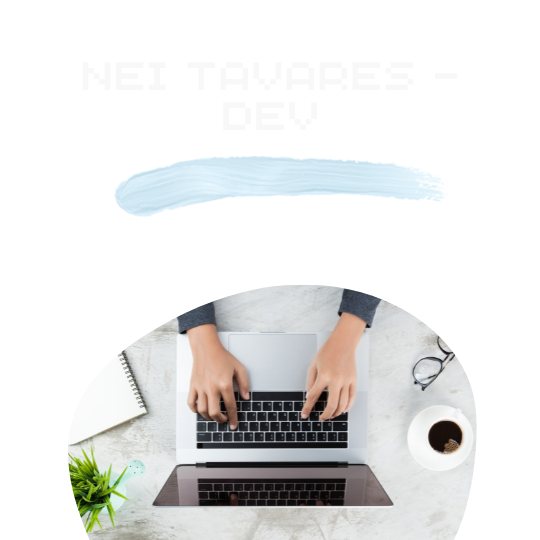

Quem é o DEV por trás do site?

Me chamo Nei Tavares tenho 29 anos sou
apaixonado por tecnologia. Moro em Santa Maria - RS há aproximadamente 7 anos e trabalho no mercado
financeiro.
Atualmente estudando na Labenu uma institução fantástica que tem me ensinado muito a respeito de programação
e também ajudando no desenvolvimento de Soft Skills que vejo como importantíssimas no meu desenvolvimento
como pessoa.
Moro com minha noiva e com nossa cachorrinha Luna